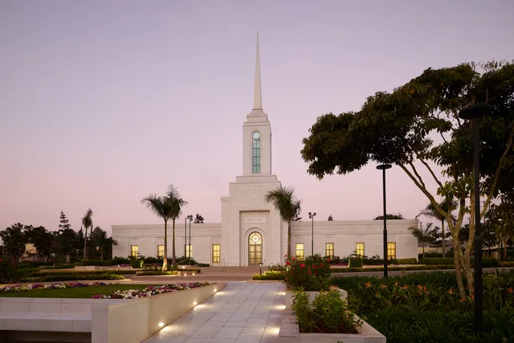

Temple Album
Home
Old
New
Large
Small
Featured Temples

Nairobi Kenya Temple
Japan Temple
Nicaragua Temple
St. Paris Temple
Nairobi Kenya Temple
Ephraim Utah Temple
Cape Town Africa Temple
Apia Samoa Temple
Billings Montana Temple